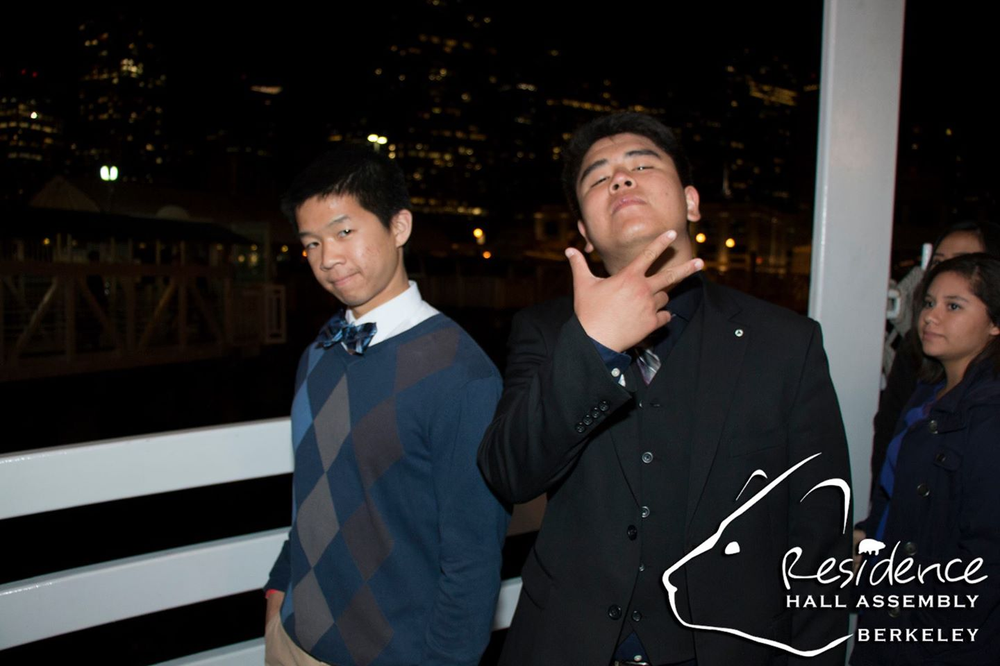

I'm currently on the BART. Sitting amidst a morass of people writing a new blog post. You may wonder why I'm on the BART on a Friday evening. Actually an interesting story! So I'm buying a new Macbook from craigslit and I agreed to meet with the seller at "the Wells Fargo by the BART station." I'm sure you can tell that statement was pretty vague. Apparently it was too vague and we ended up going to different BART stations so now, no Macbook. Quite disappointing. I was super excited to start messing with it and configuring it all night but I guess all good things have some level of anticipation and this only extends the anticipation. I get another day using my awesome Lenovo for another evening.
So it really is an end of an era. I used the Lenovo Yoga back in March of 2013. I remember my mom was looking to buy me my first personal laptop so I could start working on college essays. It's been quite awhile. Now I'm looking to buy a Macbook Pro 2015 for an improved user experience and a better programming experience. There also have been a lot of little bothersome kinks with the Lenovo recently. I dual-booted Ubuntu onto the laptop which has a couple bugs such as randomly crashing and when it crashes when it is hibernating, it causes my laptop to overheat. Otherwise, switching to Ubuntu has been one of the best decisions I've made and has definitely improved my coding experience. Unix systems are pretty bomb and I like tweaking little things through the terminal and sudo. But definitely looking forward to a cleaner and more unified experience with OSX.
The semester is winding down which is both exciting and sad at the same time. I'm definitely excited to be starting my summer internship at Ra Power Managemenet and moving into the Blake apartment. Summer is definitely going to be a completely new experience living away from home, working, and having a lot of time to work on side projects, work out, and just hang out. I'm also sad to have the semester come to an end. Freshman year of college has been such a unique and enlightening experience and it's crazy how fast it has all gone by. I've met so many different people, learned so much about myself, and really grown intellectually that I can't even imagine what I will be like in the coming years. So I'm nearing my stop but it's awesome to sneak in a blog post on the train. No song for today since I don't have internet access currntly. Thanks for reading!